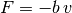
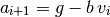
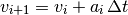
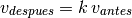

Con la simulación que se ha desarrollado hasta el momento, la bola nunca deja de rebotar y regresa siempre a la misma altura, lo cual no es lo que ocurre en la realidad.
Para hacer que la simulación corresponda realmente al comportamiento que observamos en la caída de una bola, debemos incluir dos factores adicionales a la simulación, que son los que vamos a describir a continuación.
Ya que el aire es un fluido, la bola pierde parte de su velocidad mientras lo atraviesa, lo que hace que paulatinamente se vaya deteniendo. En Física este fenómeno se describe mediante una fuerza de arrastre, que se define como:

donde b es una constante entre 0 y 1, que depende de las propiedades del fluido y de las dimensiones del objeto que lo atraviesa, y v es la velocidad del mismo.
Para incluir esta fuerza en la simulación, debe dejarse de tomar la aceleración como constante e igual a la gravedad, y en cambio calcularla como:

Incluir la fuerza de arrastre en la simulación de la caída de una bola. Para ello debe definirse una nueva lista llamada aceleraciones, cuyo primer elemento va a ser g y los demás se van a calcular con la ecuación anterior.
Calcular las velocidades con el método de Euler, como

Obtener una gráfica de la aceleración vs. el tiempo, así como nuevas gráficas para la posición y la velocidad. Que cambió ahora?
Cuando un objeto choca contra otro, su velocidad después del choque no es exactamente igual a como lo era antes, sino que disminuye en una pequeña fracción debido a que el impacto absorbe parte de la energía cinética del golpe y la transforma en calor.
En Física este fenómeno se describe haciendo que la velocidad después del choque sea ligeramente menor que la velocidad antes del mismo, así:

donde k es una constante entre 0 y 1, que depende de las propiedades del material que compone a los objetos que chocan.